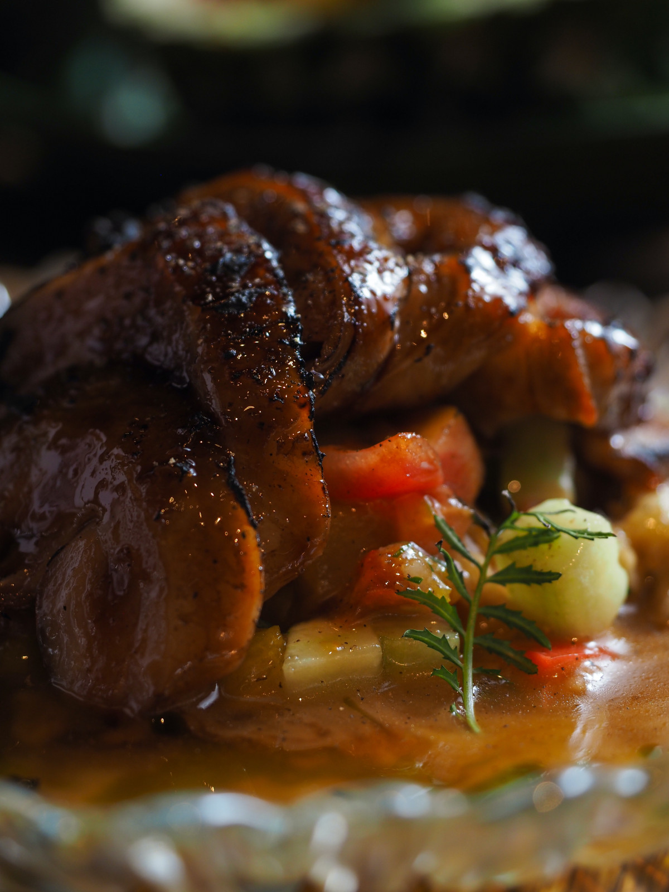

Stifado

Stifado Recipe
Stifado is my fav food
Ingredients
- 500 γρ. μοσχάρι ελιά σε κομμάτια των 80 γρ
- 750 γρ. κρεμμυδάκια στρογγυλά Μπαρμπαστάθης
- 1 κρεμμύδι ψιλοκομμένο
- 1 καρότο ψιλοκομμένο
- 200 γρ. συμπικνομένος χυμός ντομάτας
- 15 + 15 ml. ξύδι μπαλσάμικο
- 200 + 50 ml. κρασί κόκκινο
- 4-5 φύλλα δάφνης
- 1 στικ κανέλας
- 5-6 μπαχάρια
- 2-3 σκελίδες σκόρδο (προαιρετικά)
- 1+ 2 κ.γ. ζάχαρη
- 80 + 80 ml. εξαιρετικά παρθένο ελαιόλαδο
- 650 + 100 ml. ζωμό βοδινού
- αλάτι, πιπέρι
Steps
Preparation
- Τα κρεμμυδάκια θα μαγειρευτούν χώρια από το κρέας.
- Ψιλοκόβεις το καρότο, το κρεμμύδι και το σκόρδο (Θα γίνει η βάση της σάλτσας και θα λιώσει με το κρέας)
- Τεμαχίζεις το κρέας.
- Ετοιμάζεις τον ζωμό (Ζεστός).
Execution
- Στεγνώνεις το μοσχάρι -> Το σωτάρεις με 80 μλ λαδιού. Λίγα κομμάτια την φορά, να μην πέσει η θερμοκρασία και βράσει -> Βγάζεις το κρέας.
- Ρίχνεις το κρέας πίσω στην χύτρα -> σβήνεις με 15μλ μπαλσάμικο και 200μλ κρασί (3'-4') -> Ξύνεις με την σπάτουλα τον πάτο της χύτρας για να καθαρίσει από τα κολλημένα -> Βάζεις ένα 1κγ ζάχαρι.
- 650μλ ζωμός και βράση για 40' σε υψηλή πίεση χύτρας.
- Προσθέτεις 200μλ χυμό ντομάτας, αλάτι, πιπέρι -> Δέσιμο σάλτσας 10'
- Σωτάρεις τα κρεμμυδάκια σε 80μλ λάδι
- Σβήνεις με 15μλ μπαλσάμικο + 2κγ ζάχαρη, αλάτι, πιπέρι και ξύνεις τον πάτο -> 100μλ κρασί.
- Όταν αυτά εξατμιστούν, 100μλ ζωμός -> Βράσιμο μέχρι να μαλακώσουν
- Προσθέτεις τα κρεμμυδάκια στο κρέας και τα μαγειρεύεις για 5' να δέσουν.
Home